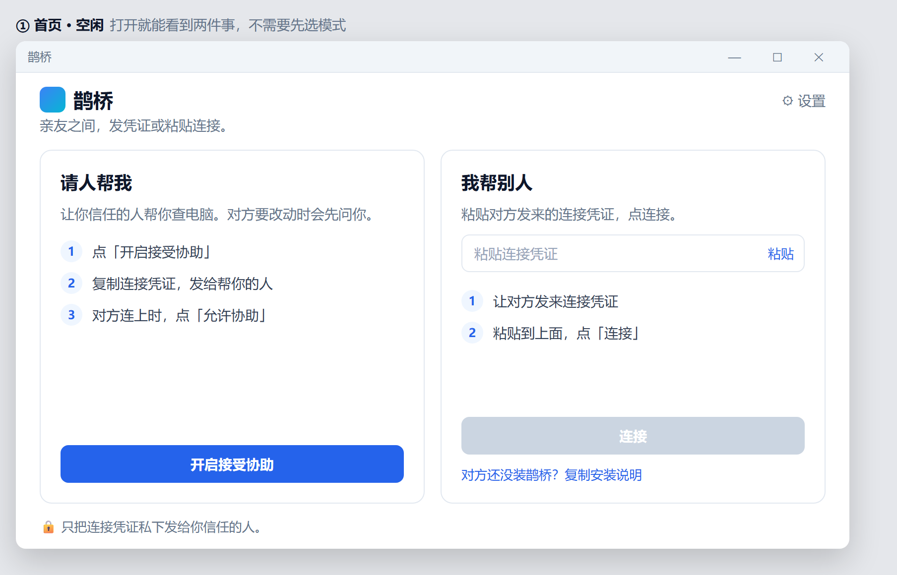
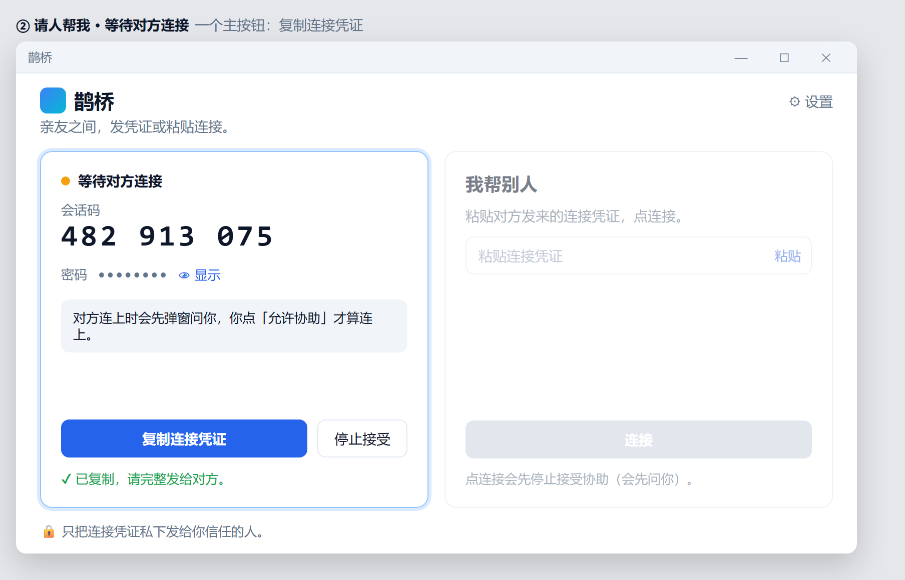
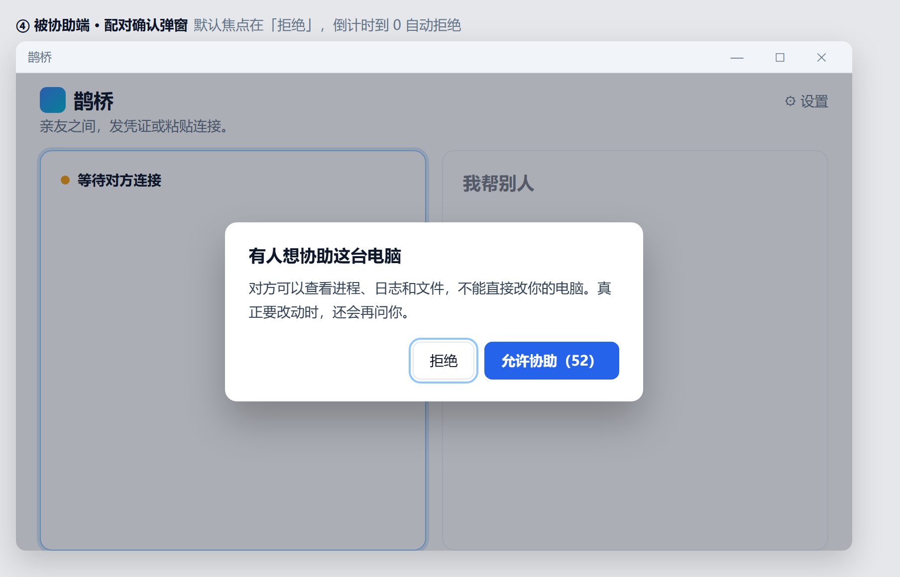
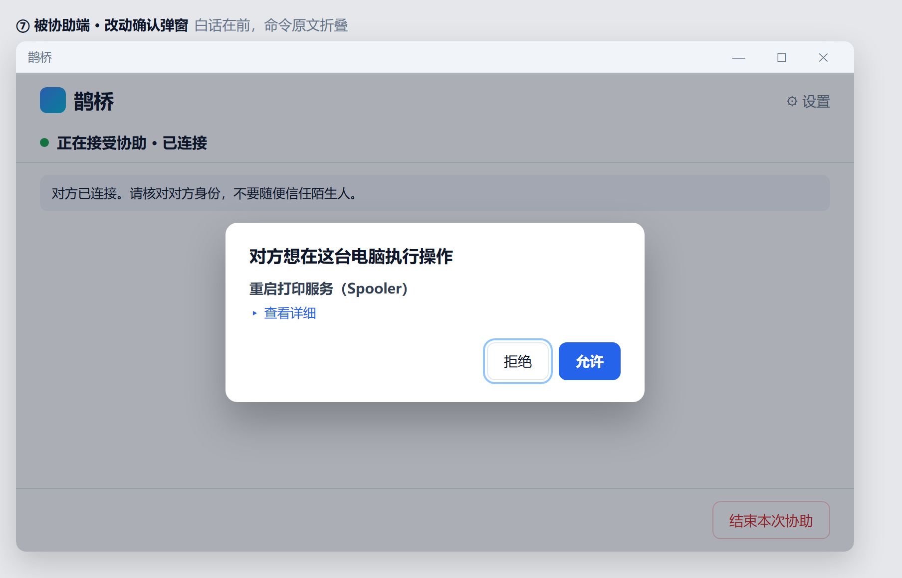
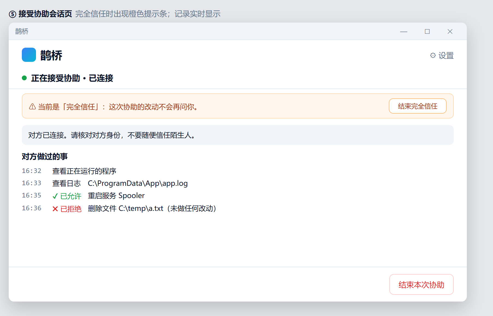
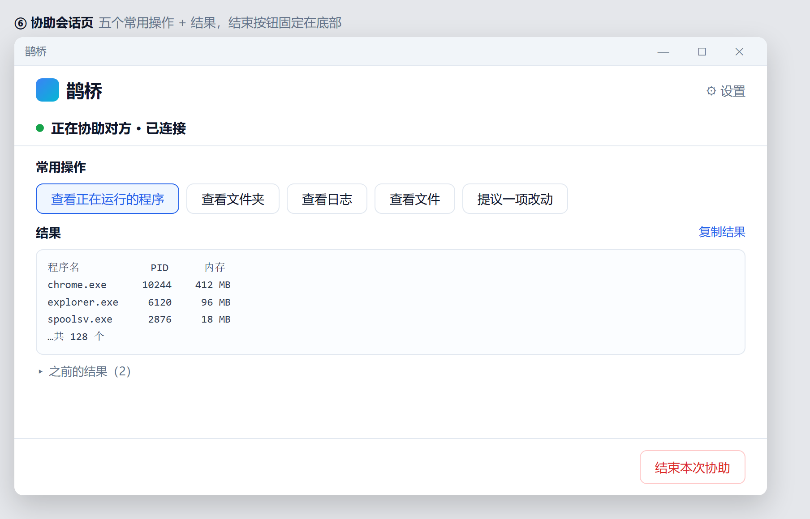
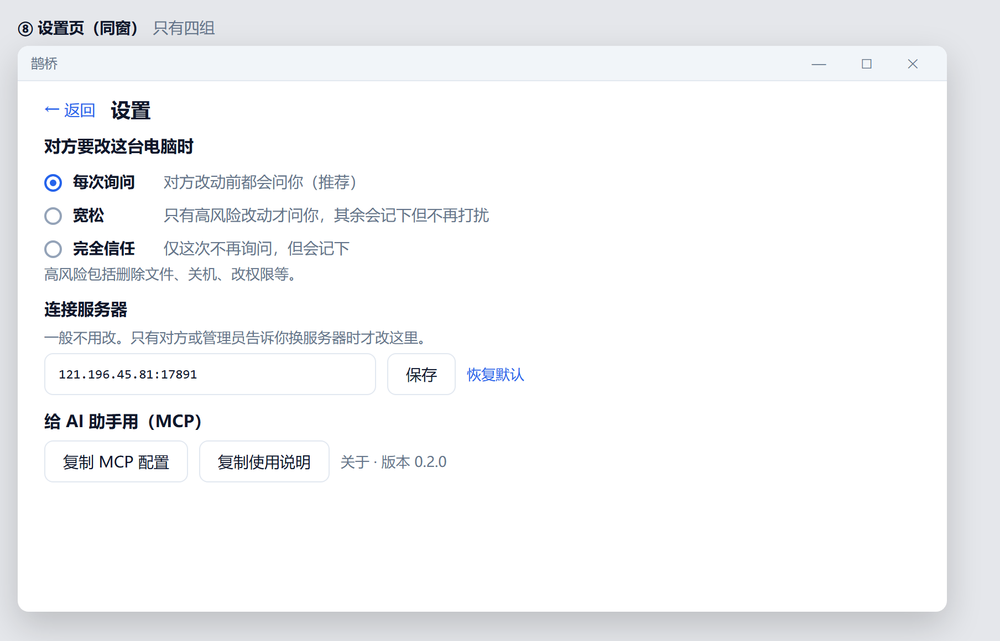
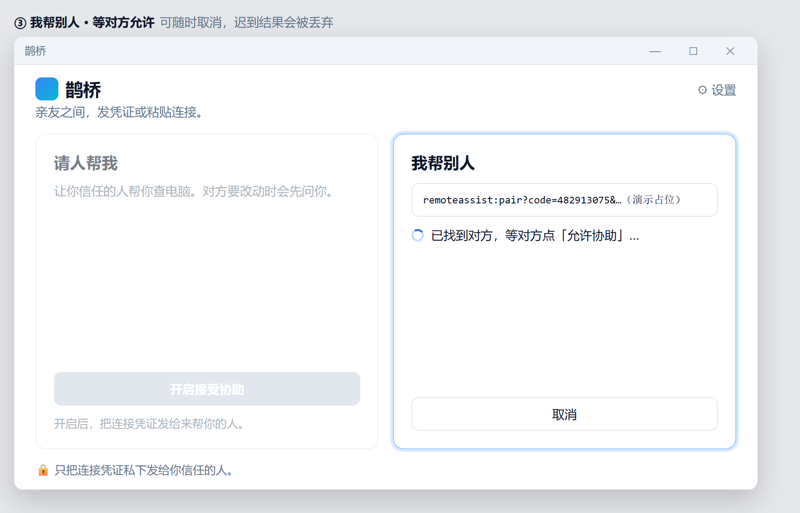

鹊桥远程协助：不是远程桌面，是「确认后再改」的亲友排障工具
一句话：鹊桥把两边连上——对方装好客户端、发来连接凭证，你就能查进程/日志/文件；真正要改电脑时，必须在对方眼前点「允许」。

首页：一屏两件事
- 官网：http://121.196.45.81/
- Windows 下载：以官网为准
- 开源：GitHub / Gitee
一、适合谁
- 家里的「技术担当」：不想上完整远程桌面全家桶。
- 帮同事快速排障：先看后改，改前本机确认。
- 轻量客户支持：发安装包 → 凭证 → 连接。
- 讨厌画面接管：主路径是命令协助，不是键鼠注入。
二、三个真实使用场景
场景 A：周末帮爸妈修电脑

复制连接凭证

配对确认

改动确认：白话在前

对方做过的事
场景 B：同事排障

协助端常用操作

信任三档（勿据此宣称 MCP 已可用）
场景 C：客户支持

连接中状态
三、安全设计
| 原则 | 说明 |
|---|---|
| 写操作本机确认 | 中继不代执行 |
| 配对可拒绝 / 超时拒绝 | 人不在也不会默默连上 |
| 凭证私下发 | 只发给信任的人 |
| 不做画面接管主路径 | 命令协助，非完整远程桌面 |
四、下载
打开 官网 下载 Windows 安装包，以页面实际文件名为准。